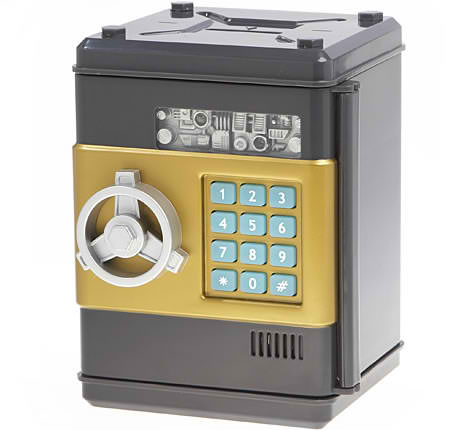

A Mystery Manila Online Mini Game

Before it was stolen, the sapphire was kept inside this locked vault.
To open it, find the 3-number combination by liking Mystery Manila on Facebook
and searching for hidden clues somewhere within the page.
When you've found the combination, type in 'www.mysterymanila.com/[combination].html' on your browser to proceed.
"What is Mystery Manila about? Have you seen their photos? What are its milestones? The answers to these questions might help you."
Need A Clue?
Use your night vision to search the page